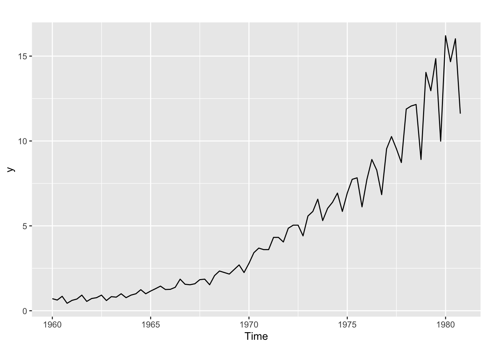
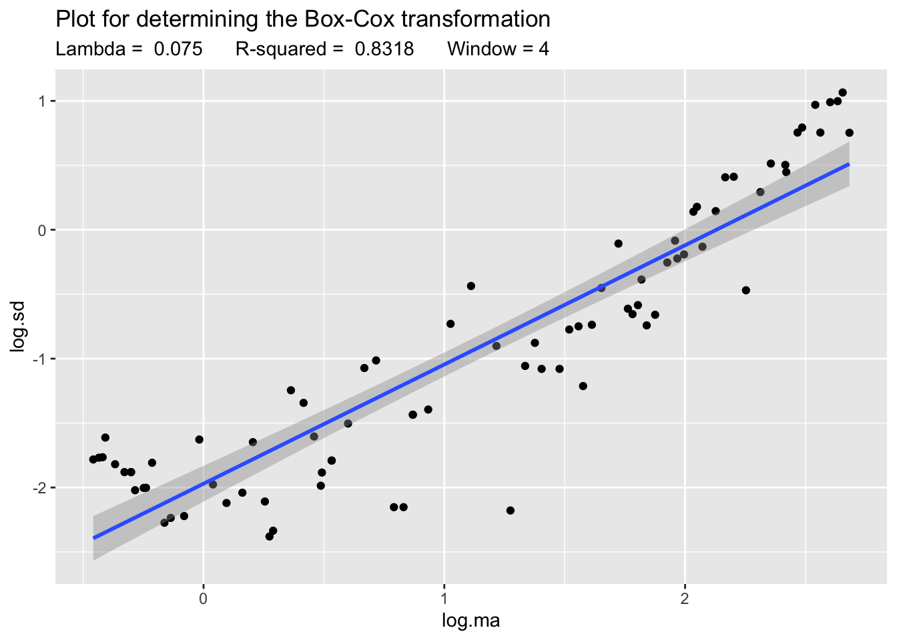
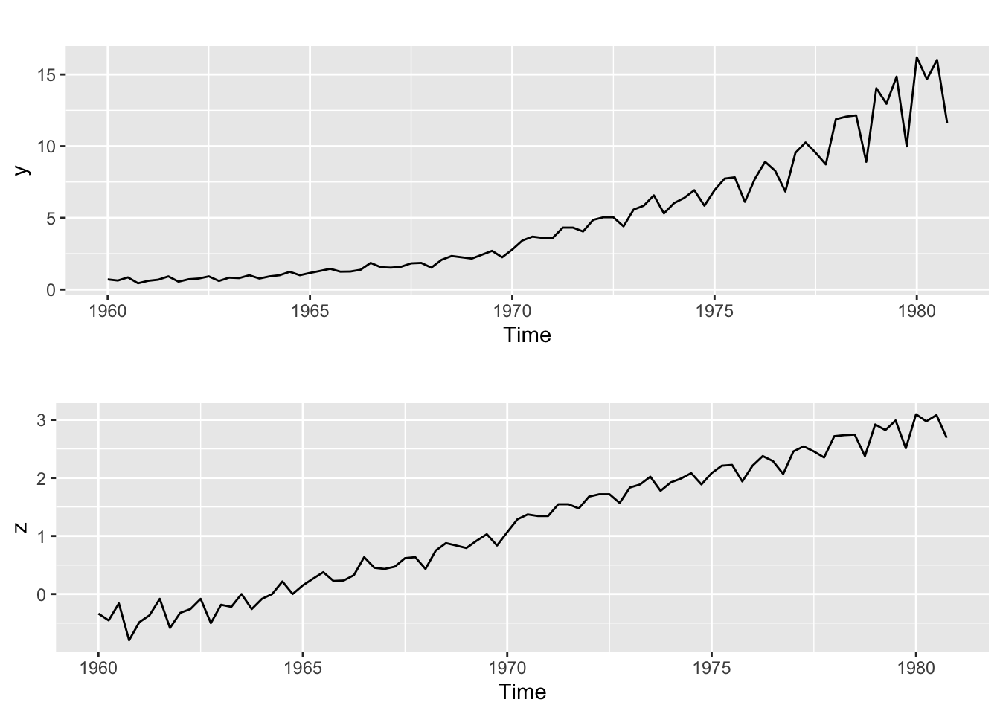
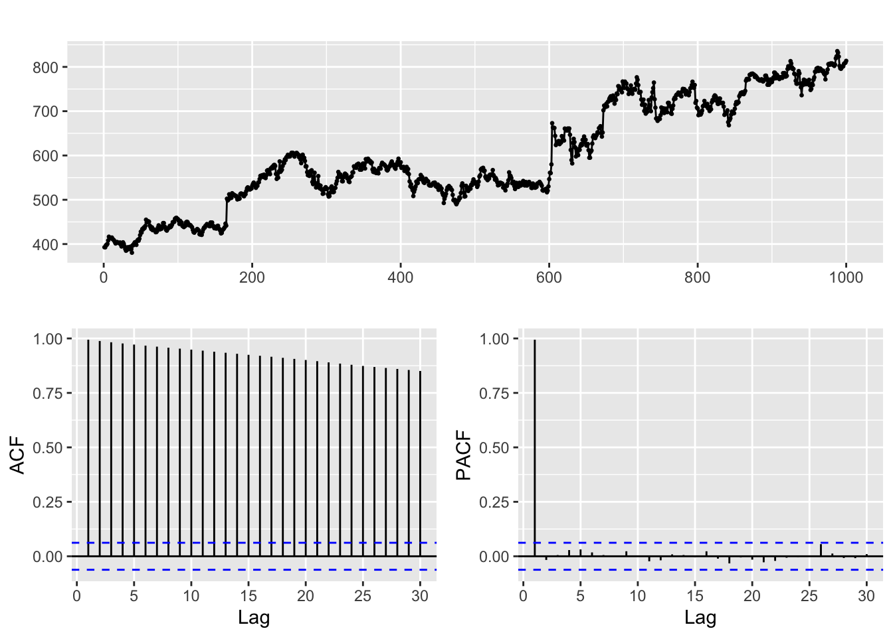
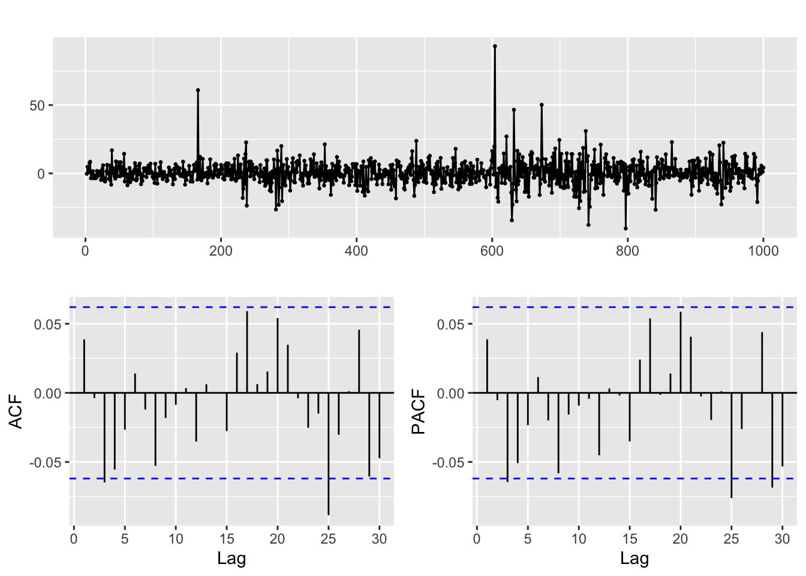
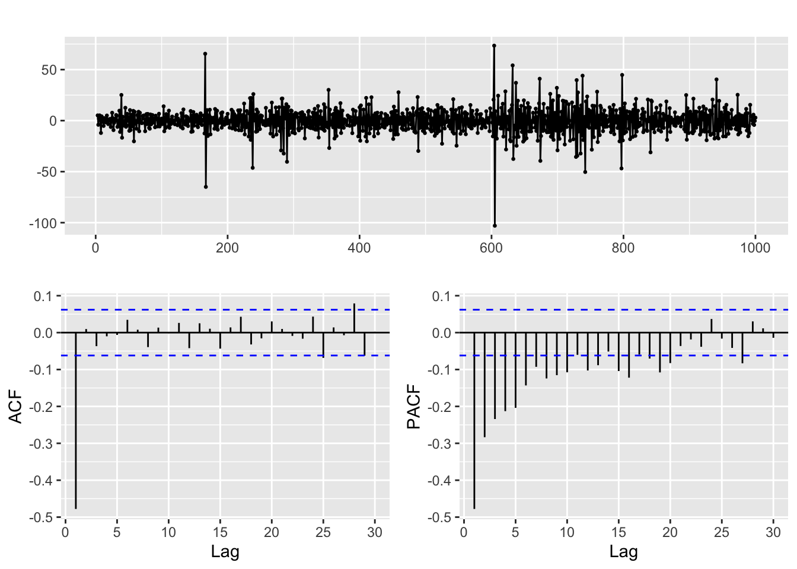
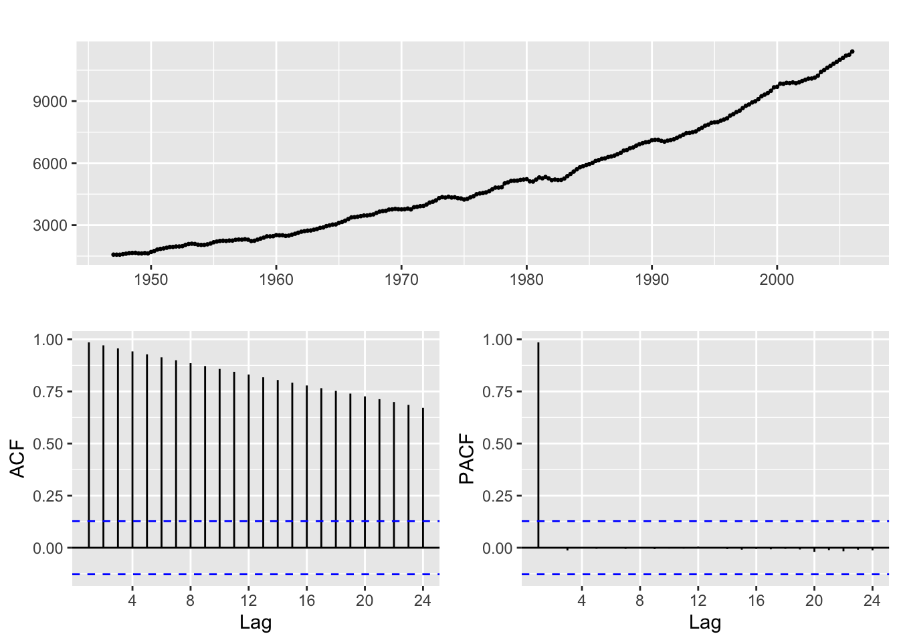
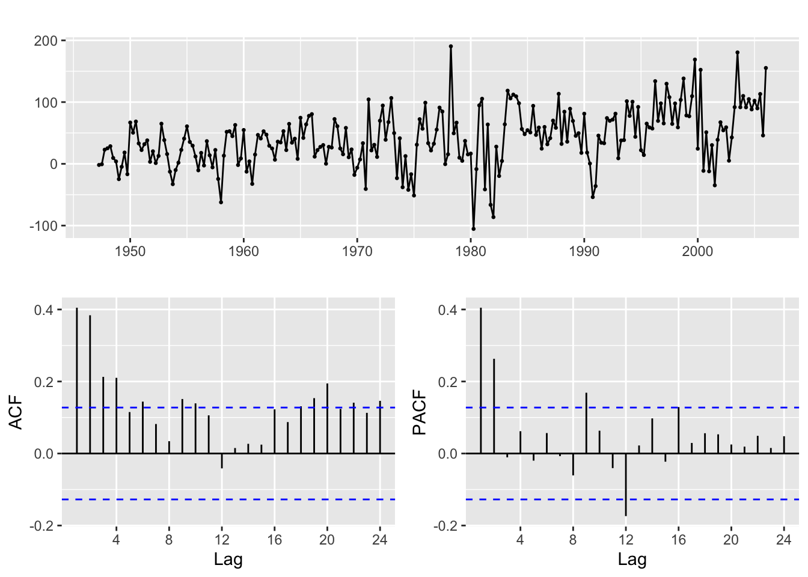
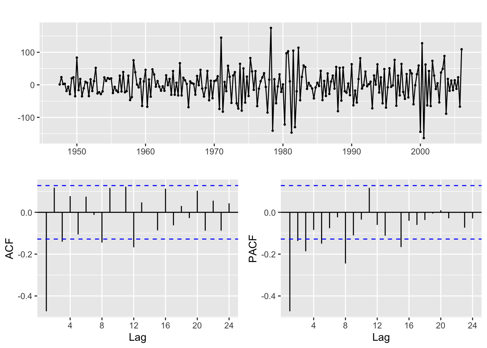

########################################################################################
############## Forecasting: ARIMA models ############################
########################################################################################
library(MLTools)
library(fpp2)
library(readxl)
library(tidyverse)
library(lmtest) #contains coeftest function
library(tseries) #contains adf.test function2025_09_24 ARIMA, lecture notes
Preliminaries
Set working directory
setwd(dirname(rstudioapi::getActiveDocumentContext()$path))Box-Jenkins Methodology

Step 1. Box-Cox transformation
This transformation is often applied when we have a time series with non homogeneous variance and we try to make it more homogeneous, so that the time series behavior looks more stationary. It is given by:
\[ w_t = \begin{cases} \log(y_t) & \text{ if } \lambda=0; \\ (\text{sign}(y_t)|y_t|^\lambda-1)/\lambda & \text{otherwise}. \end{cases} \tag{Equation 3.1 in fpp3} \]
Note: when \(\lambda = 1\) formally we get \(w_t = |y_t| - 1\). In fact, we (and many libraries) will take \(\lambda = 1\) meaning no change required and set \(w_t = y_t\) in that case.
An example with a heteroskedastic time series
The jj time series in the astsa library describes the Johnson & Johnson quarterly earnings per share (1960 to 1980). The plot below shows clearly that the variance increases with the level of the time series:
library(astsa)
y <- jj
autoplot(y)
Let us use the BoxCox.lambda.plot to explore if the Box-Cox transformation can be useful and which value of \(\lambda\) to use.
Lambda <- BoxCox.lambda.plot(y)`geom_smooth()` using formula = 'y ~ x'
The plot and the high value of \(R^2\) indicate that Box-Cox can be in fact useful. So we apply it:
z <- BoxCox(y, lambda = Lambda)And now we compare the plots of both the transformed and untransformed time series:
p1 <- autoplot(y)
p2 <- autoplot(z)
gridExtra::grid.arrange(p1, p2)
The lower plot illustrates how in this case the variance of the transformed series has become more homogeneous.
Why does it work?
Using a first order Taylor approximation it can be shown that the following relation between the varince of the transformed and untransformed time series holds: \[ \text{Var}(z_t) \approx y_t^{2\lambda - 2} \cdot \text{Var}(y_t) \] Now suppose that the variance of the time series is proportional to its value: \[ \text{Var}(z_t) \approx y_t^{2\lambda - 2} \cdot y_t = y_t^{2\lambda - 1} \] Then to make the variance of \(z_t\) constant we should choose: \[ 2\lambda - 1 = 0 \Rightarrow \lambda = \frac{1}{2} \] That is, Box-Cox is essentially a square root transformation in that case. Similar results hold whenever we can assume that the variance of the time series is proportional to a power of its value, that is:. \[ \text{Var}(y_t) \propto y_t^k \] This means that for the standard deviation: \[ \text{Sd}(y_t)^2 \propto y_t^k \] And if we make a log-log scatterplot of \(\text{Sd}(y_t)\) vs \(y_t\) (using local estimates) then the slope of the regression line fitted to that plot will leads us to \(k\), which in turn will lead us to \(\lambda\) (as illustrated above for the case \(k = 1\))
Step 2. Analyze if differencing is required
Differencing to remove a linear trend
Let us see an example. Suppose \(y_t\) is a time series with a linear trend, for example:
\[ y_t = a + bt + u_t \]
where \(u_t\) is stationary. Then
\[ \nabla y_t = y_t - y_{t-1} = b + \nabla u_t \] Now, if \(u_t\) is (weakly) stationary, the same holds for its first order difference. Keep in mind, however, that differencing adds extra dynamics to the time series! For example, if \(u_t\) above is white noise, then its difference will be stationary but it will no longer be white noise: it will be –by definition– an MA(1) process.
Therefore differencing must be kept to a minimum! If we overdifference the time series, tha ACF and PACF may no longer be useful to find a good fit.
Example. Google stock closing price series.
This time series clearly exhibits a trend, as can be seen in the plots below:
ggtsdisplay(goog)
Therefore we apply a first order regular difference
ggtsdisplay(diff(goog, differences = 1))
The result hints that the differenced time series behaves like white noise (you can use the diagnosis tools we learnt in the previous session to check this). In particular the stock closing price appears to be a random walk.
But when we overdifference it a new dynamic appears in the resulting series, as shown in the ACF and PACF below. Fitting a model to this second order difference is a bad idea, as it will make the forecasts and estimates unreliable.
ggtsdisplay(diff(goog, differences = 2))
When to use a second order difference?
Typically, when we have series whose trend is better fitted with a quadratic curve rather than a linear one. For example, the usgdp product time series
ggtsdisplay(usgdp)
If you take a first order difference in order to remove a linear trend you get this results:
ggtsdisplay(diff(usgdp, differences = 1))
And if you look at the time plot of the differenced series, there is still a visible upwards trend. Let us take a second order difference:
ggtsdisplay(diff(usgdp, differences = 2))
Now the resulting series looks much more like a stationary time series.
The ndiffs function
This function computes the differences of a time series and then performs a hypothesis test to check whether the result is stationary. But keep in mind that the results of stationarity tests are often hard to interpret (the null may not be as simple as you may think). We recommend that you practice examining the plots in order to decide about the number of differences instead of blindly relying on ndiffs. In any case, read Section 9.1 of Hyndman & Athanasopoulos (2021)
For this example the result is:
ndiffs(usgdp)[1] 2Now we are ready to go back to the Moodle Code file
Note about differencing with diff:
Be careful! A second order regular difference is \[
\nabla(\nabla y_t) = \nabla^2 y_t = \nabla(y_t - y_{t - 1}) =
(y_t - y_{t - 1}) - (y_{t - 1} - y_{t - 2}) = y_t - 2 y_{t - 1} + y_{t - 1}
\] And this is quite different from computing \(y_t - y_{t-2}\). However, the diff function can be used to compute both these operations and you need to know which one you are using. The lag and differences argument are the ones you need to understand (read the function help with ?diff). In case of doubt, if you need a second order difference \(\nabla^2 y_t\) remember that you can always apply diff twice.
References
Hyndman, R. J., & Athanasopoulos, G. (2021). Forecasting: Principles and practice. OTexts. Retrieved from https://otexts.com/fpp3/
Krispin, R. (2019). Hands-on time series analysis with r: Perform time series analysis and forecasting using r. Packt Publishing Ltd. Retrieved from https://github.com/PacktPublishing/Hands-On-Time-Series-Analysis-with-R